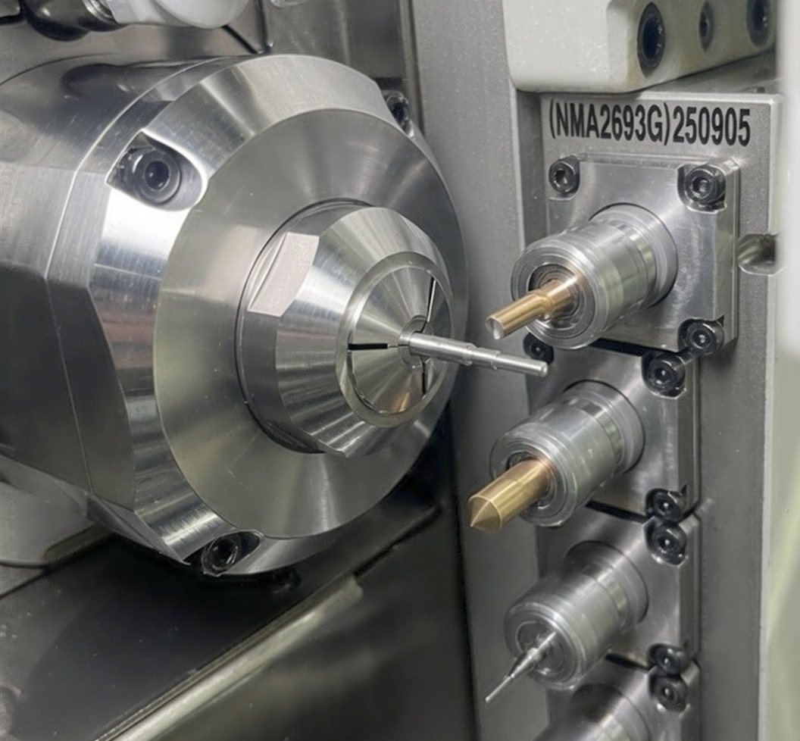

建昶精機專精微型精密車削零件 Ø0.7mm–Ø2mm——PIN、微型軸心、Ferrule 相關件、微型接頭，服務光通訊、醫療、半導體設備等高精度產業。

適合小外徑 Ø0.7–20mm 連續量產。
Micro Parts Long Shaft High Tolerance適合成熟料號大批量生產，月產 10 萬件以上，節拍穩定、單件成本低。
Mass Production Cost Efficiency高精度外徑研磨，公差可達 ±0.0015mm，適合需要超精密尺寸的 PIN 類、軸心與定位件。
高精度 ±0.0015mm加工後可整合電鍍鎳、電鍍鋅、化學鎳、熱處理、研磨、白鐵鈍化、分料包裝，依訂單需求。


長達 38 年持續深耕走心式車床微小件。
各式銅料、不鏽鋼、鋼材、鋁材、合金等均有量產實績。
加工後可整合電鍍鎳、電鍍鋅、化學鎳、熱處理、研磨、白鐵鈍化、分料包裝，依訂單需求。